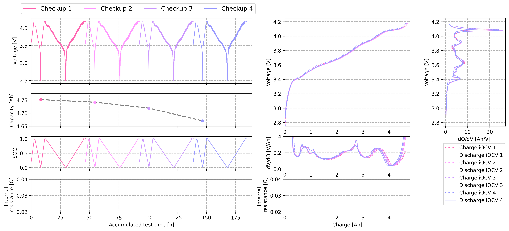

Table of Contents#
Setup#
Load PyDPEET and set logging style to “Error” to prevent log spamming.
[2]:
import pydpeet as eet
eet.set_logging_style("ERROR")
Import and Preprocessing#
Import example data
Test device: Neware
4 checkups (capacity test, GITT)
Calendar ageing
Merge the 4 files into one DataFrame for easier processing
Add primitive segments, like “CC”,”CV” or “Rest” to the DataFrame and saving in an extra variable
[5]:
dfs = eet.read(config=eet.ReadConfig.Neware_8_0_0_516, input_path="../../res/raw_data_from_cyclers")
df_merged = eet.merge_into_series(dfs)
df_segments = eet.add_primitive_segments(df_merged, eet.PrimitiveConfig.OCV_ANALYSIS_DEFAULT)
Add Columns#
Loading the configuration of the used cell (LGM50LT with 4.8 Ah)
Adding SOC to the DataFrame
Adding internal resistance to the DataFrame
Adding the charge throughput to the DataFrame
[8]:
config = eet.BatteryConfig.LGM50LT_NMC_4800
df_merged = eet.add_soc(df_merged, df_segments, standard_method=eet.SocMethod.WITH_RESET_WHEN_FULL, config=config)
df_merged = eet.add_resistance_internal(df_merged, config=config)
df_merged = eet.process.analyze.capacity.add_charge_throughput(df_merged)
Extract Features#
Extract iOCV
[10]:
ocv_data = eet.extract_ocv_iocv(df=df_merged, config=config, visualize=False)
Plot Results#
Plotting the results using Matplotlib
[12]:
from plot_helper import KWB_plot # noqa
KWB_plot(df_merged, ocv_data)

Export#
Export data frame to Parquet file.
[13]:
eet.write(df_merged, output_path="./parquet", output_file_name="Test_Output")